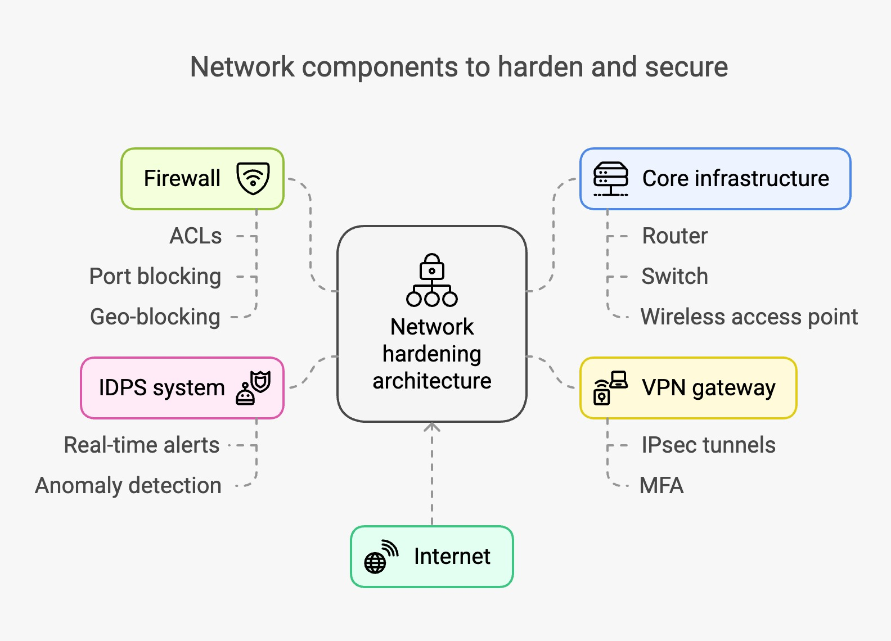
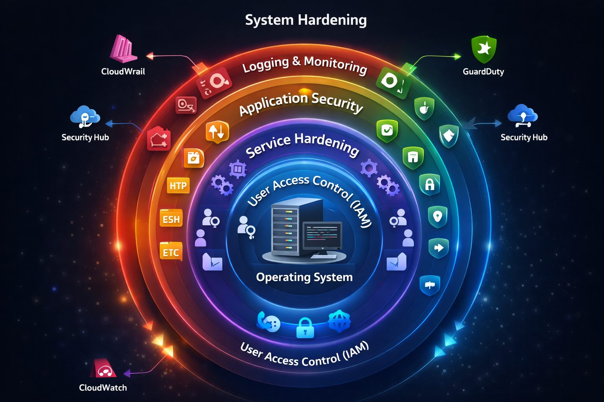

🎯 Core Security Principle
⚠️ Core Truth: Security is about controlling access. There are two places where access can be controlled:
1. BEFORE reaching the system (Network Hardening)
2. AFTER reaching the system (System Hardening)
📚 Real-Life Analogy: Protecting Valuables
Imagine protecting a valuable gold ornament:
- Layer 1: House entrance with gate (Network Hardening)
- Layer 2: Bedroom door (Network Hardening)
- Layer 3: Almirah/Cupboard (Network Hardening)
- Layer 4: Locker inside cupboard (System Hardening)
- Layer 5: Only authorized person has key (System Hardening)
- Monitoring: CCTV cameras throughout (Both)
💡 Key Insight: Multiple layers of security (defense in depth) protect against different threat vectors.
🌐 Network Hardening
📖 Definition
Network Hardening controls access BEFORE someone reaches the system. It answers: "Who can connect? From where? On which port?"

Figure 3: Network Hardening Components
🔧 Network Hardening Components
| Component |
Purpose |
AWS Implementation |
Example Rule |
| Firewall |
Filter incoming/outgoing traffic |
Security Groups, Network ACLs |
Allow HTTP (80) from anywhere |
| Port Control |
Allow only necessary ports |
Security Group Rules |
SSH (22) only from admin IP |
| IP Filtering |
Block/allow specific IPs |
NACL, WAF IP sets |
Block suspicious IP ranges |
| Network Segmentation |
Isolate resources |
VPC, Subnets |
Public vs Private subnets |
| IDPS |
Detect intrusions |
GuardDuty, IDS solutions |
Alert on port scans |
⚙️ Practical Implementation: Network Hardening
Method 1: AWS CLI - Security Group Configuration
# Create a security group with strict rules
aws ec2 create-security-group \
--group-name "WebServer-SG" \
--description "Hardened security group for web servers" \
--vpc-id vpc-xxxxx
# Allow HTTP from anywhere (port 80)
aws ec2 authorize-security-group-ingress \
--group-id sg-xxxxx \
--protocol tcp \
--port 80 \
--cidr 0.0.0.0/0
# Allow SSH ONLY from admin IP (port 22)
aws ec2 authorize-security-group-ingress \
--group-id sg-xxxxx \
--protocol tcp \
--port 22 \
--cidr 203.0.113.25/32 # Replace with your IP
# Deny all other inbound traffic (implicit in AWS)
# All outbound traffic allowed by default
# Create Network ACL for subnet-level control
aws ec2 create-network-acl \
--vpc-id vpc-xxxxx
# Add NACL rule to block specific IP range
aws ec2 create-network-acl-entry \
--network-acl-id acl-xxxxx \
--ingress \
--rule-number 100 \
--protocol -1 \
--cidr-block 198.51.100.0/24 \
--rule-action deny
Method 2: AWS Console - Network Hardening Setup
- Configure Security Groups:
- Go to EC2 Dashboard → Security Groups
- Click Create security group
- Name: "Hardened-WebServer-SG"
- Add Inbound Rules:
- Type: HTTP | Port: 80 | Source: 0.0.0.0/0
- Type: HTTPS | Port: 443 | Source: 0.0.0.0/0
- Type: SSH | Port: 22 | Source: Your IP/32
- Outbound Rules: Keep default (all traffic allowed)
- Click Create
- Configure Network ACLs:
- Go to VPC Dashboard → Network ACLs
- Select your VPC's NACL
- Add Inbound Rules (evaluated in order):
- Rule 100: Block malicious IP | Deny
- Rule 110: Allow HTTP | Port 80 | Allow
- Rule 120: Allow HTTPS | Port 443 | Allow
- Rule 130: Allow SSH | Port 22 | Allow
- Rule *: Deny all (default)
- Click Save changes
- Enable VPC Flow Logs:
- Select your VPC → Actions → Create flow log
- Filter: Accept, Reject, or All
- Destination: CloudWatch Logs or S3
- This monitors all network traffic
✅ Best Practice: Use Security Groups for instance-level control (stateful) and NACLs for subnet-level control (stateless). Security Groups should be your primary defense.
💻 System Hardening
📖 Definition
System Hardening controls access AFTER someone reaches the system. It answers: "What can users do inside the system?"

Figure 4: Defense-in-Depth System Hardening Model
🔧 System Hardening Components
| Component |
Focus Area |
Actions |
AWS Tools |
| Operating System Hardening |
OS security baseline |
• Apply latest security patches
• Disable unnecessary services
• Configure secure boot
• Remove default accounts
|
• Systems Manager Patch Manager
• EC2 Image Builder
• Inspector
|
| User Access Control |
Who can access what |
• Implement least privilege
• Use IAM roles
• Enable MFA
• Disable root login
|
• IAM
• AWS SSO
• Secrets Manager
|
| Service Hardening |
Running services |
• Stop unused services
• Configure secure settings
• Update service versions
• Disable insecure protocols
|
• Systems Manager
• Config
• Service Catalog
|
| Application Security |
Installed software |
• Install only required apps
• Keep applications updated
• Remove outdated packages
• Scan for vulnerabilities
|
• Inspector
• ECR Image Scanning
• Trusted Advisor
|
| File & Permission Security |
Data access control |
• Set strict file permissions
• Encrypt sensitive files
• Audit file access
• Implement file integrity monitoring
|
• KMS
• CloudTrail
• Macie
|
| Logging & Monitoring |
Activity tracking |
• Enable system logs
• Track login attempts
• Monitor suspicious activity
• Set up alerts
|
• CloudWatch Logs
• CloudTrail
• GuardDuty
• Security Hub
|
⚙️ Practical Implementation: System Hardening
Method 1: AWS CLI - System Hardening
# 1. Enable CloudWatch Logs for EC2
aws logs create-log-group \
--log-group-name "/aws/ec2/system-logs"
# 2. Apply security patches using Systems Manager
aws ssm send-command \
--document-name "AWS-RunPatchBaseline" \
--targets "Key=instanceids,Values=i-xxxxx" \
--parameters "Operation=Install"
# 3. Create IAM role with least privilege
aws iam create-role \
--role-name "EC2-LimitedAccess" \
--assume-role-policy-document file://trust-policy.json
aws iam attach-role-policy \
--role-name "EC2-LimitedAccess" \
--policy-arn arn:aws:iam::aws:policy/ReadOnlyAccess
# 4. Enable GuardDuty for threat detection
aws guardduty create-detector \
--enable \
--finding-publishing-frequency FIFTEEN_MINUTES
# 5. Run security assessment with Inspector
aws inspector2 enable \
--resource-types EC2 ECR
# 6. Configure file integrity monitoring (example user data script)
# This would be in EC2 user data or Systems Manager document
#!/bin/bash
# Install AIDE (Advanced Intrusion Detection Environment)
yum install aide -y
aide --init
cp /var/lib/aide/aide.db.new.gz /var/lib/aide/aide.db.gz
# Schedule daily integrity checks
echo "0 5 * * * /usr/sbin/aide --check" | crontab -
Method 2: AWS Console - System Hardening Setup
- Configure IAM for Least Privilege:
- Go to IAM Dashboard → Roles
- Click Create role
- Select: AWS service → EC2
- Attach policies:
- For web servers:
AmazonS3ReadOnlyAccess
- For logging:
CloudWatchAgentServerPolicy
- Avoid:
AdministratorAccess
- Name role: "EC2-WebServer-Role"
- Attach to EC2 instance during launch
- Enable Systems Manager for Patch Management:
- Go to Systems Manager → Patch Manager
- Click Configure patching
- Select: Scan and install
- Schedule: Daily at 2 AM
- Targets: Tag-based (e.g., Environment=Production)
- Reboot option: Reboot if needed
- Set Up CloudWatch Logs:
- Enable GuardDuty for Threat Detection:
- Go to GuardDuty → Get Started
- Click Enable GuardDuty
- Configure findings:
- Export to S3 for long-term storage
- Send to SNS for email alerts
- Integrate with Security Hub
- Harden OS Configuration (SSH to instance):
# Disable root login
sudo sed -i 's/PermitRootLogin yes/PermitRootLogin no/' /etc/ssh/sshd_config
# Disable password authentication (use key-based only)
sudo sed -i 's/PasswordAuthentication yes/PasswordAuthentication no/' /etc/ssh/sshd_config
# Restart SSH service
sudo systemctl restart sshd
# Set strict file permissions
chmod 600 ~/.ssh/authorized_keys
chmod 700 ~/.ssh
# Remove unnecessary packages
sudo yum remove telnet -y
# Enable automatic security updates
sudo yum install yum-cron -y
sudo systemctl enable yum-cron
sudo systemctl start yum-cron
❌ Common Mistake: Opening systems first and then trying to secure them. Always harden BEFORE exposing to network.
⚖️ Network vs System Hardening Comparison
| Aspect |
Network Hardening |
System Hardening |
| Control Point |
BEFORE reaching system |
AFTER reaching system |
| Question |
"Can you reach the system?" |
"What can you do inside?" |
| Focus |
Network traffic control |
System configuration |
| AWS Services |
Security Groups, NACLs, WAF, VPC |
IAM, Systems Manager, Inspector |
| Analogy |
House gate, door locks |
Safe inside the house |
| First Line |
✅ Yes - first defense |
❌ No - second defense |
| Prevents |
Unauthorized connection attempts |
Unauthorized actions on system |
🔄 Complete Security Implementation Workflow
| Step |
Action |
Type |
Tools |
| 1 |
Design VPC with public/private subnets |
Network |
VPC, Subnets, Route Tables |
| 2 |
Configure NACLs for subnet-level filtering |
Network |
Network ACLs |
| 3 |
Create restrictive Security Groups |
Network |
Security Groups |
| 4 |
Launch hardened AMI |
System |
EC2 Image Builder |
| 5 |
Attach IAM role with least privilege |
System |
IAM |
| 6 |
Configure OS security settings |
System |
Systems Manager, User Data |
| 7 |
Install and configure monitoring |
Both |
CloudWatch, GuardDuty |
| 8 |
Enable logging and auditing |
Both |
CloudTrail, VPC Flow Logs |
| 9 |
Regular security assessments |
Both |
Inspector, Security Hub |
| 10 |
Continuous patch management |
System |
Patch Manager |
🎯 Key Takeaways
- Defense in Depth: Use both network and system hardening
- Network Hardening: First line of defense - prevents unauthorized connections
- System Hardening: Second line of defense - limits what can be done after access
- Default Insecure: Fresh OS installations are open by default - must be hardened
- Continuous Process: Hardening is not one-time - requires ongoing maintenance
- If you can't reach it, you can't attack it - Network hardening principle